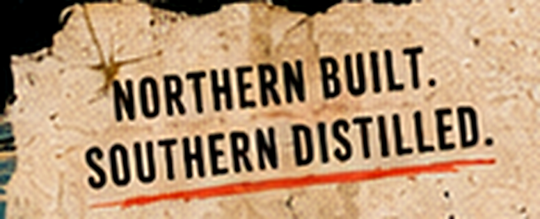
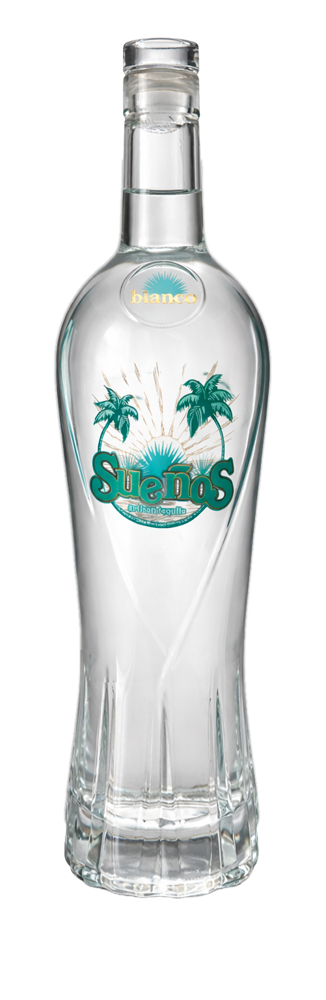

Ingredients
- 60 mL (2 oz) Sueños Blanco Tequila
- 15 mL (½ oz) fresh lime juice
- 120 mL (4 oz) chilled ginger beer
- Ice
- Lime wheel for garnish
Spicy, zippy and always popular.
A tequila spin on the mule, with bright lime and spicy ginger beer doing the heavy lifting.


Please confirm you are of legal drinking age in your location.